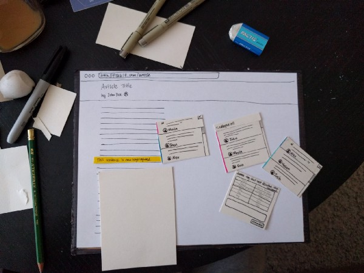

Design
Paper Prototyping
- Software prototyping (wiki): Software prototyping is the activity of creating prototypes of software applications, i.e., incomplete versions of the software program being developed.
- Demo functions
- Can be completely different from your final product.
- Paper prototyping: created with paper, present your design ideas
- Google also uses paper prototyping (from 3:25): https://www.youtube.com/watch?v=JMjozqJS44M
Paper Prototyping: How
- Step 1: Create sketches / wireframes of the feature you’re working on
- Step 2: Gather some paper, pens, markers, scissors, and maybe some cardboard if you have them.
- Step 3. Cut out the individual components of your prototype.
- Step 4. Play around with your prototype to make sure that you have all the pieces you need for what you want to test
- Step 5. Create a video to record the user flow 
- Based on: https://medium.com/@shengao/paper-prototyping-how-to-pros-cons-and-the-struggles-of-guerrilla-usability-testing-5546dd446d5e
Paper Prototyping: Example
- A video can help record the user flow of your paper prototyping
- An example about mobile app: https://www.youtube.com/watch?v=y20E3qBmHpg
- An example about web page paper prototyping: https://www.youtube.com/watch?v=0FCyKf_5qRU
- This video is very good except it does not include color design.
- Another video about user test using paper prototype testing: https://www.youtube.com/watch?v=aDqbMOI13o4
- WHat did you observe from this user study video?
- WHat are the pros and cons of paper prototyping?
Paper Prototyping Pros vs Cons
- What are the benefits of paper prototyping?
- User flows: e.g., can simulate user interactions
- Rapid sketches: can be done very fast
- Easy and cheap: cost is very low and is not hard to create a prototype
- No need programming knowledge: draw and cut
- What are the disadvantages?
- A user may interact differently with paper compared with actual computer GUIs
- Some interactivities are hard to be demoed. E.g., play a video.
Group Homework 3 (Part 1)
- “Is my classmate a vampire?” Project design
- Decide based on four features (shadow, garlic, complexion, and accent)
- A user can input his/her classmate features
- Threshold-based method will be introduced in Homework 3 (Part 2).
- Create a paper prototype.
- At least have four web pages, such as team member introduction, with four user interactions, such as classmate feature input form.
- Record the user flow of your paper prototype (maybe with your phone)
- No need to submit anything until HW3 Part 2 is introduced.
| Index | Prev | Next |